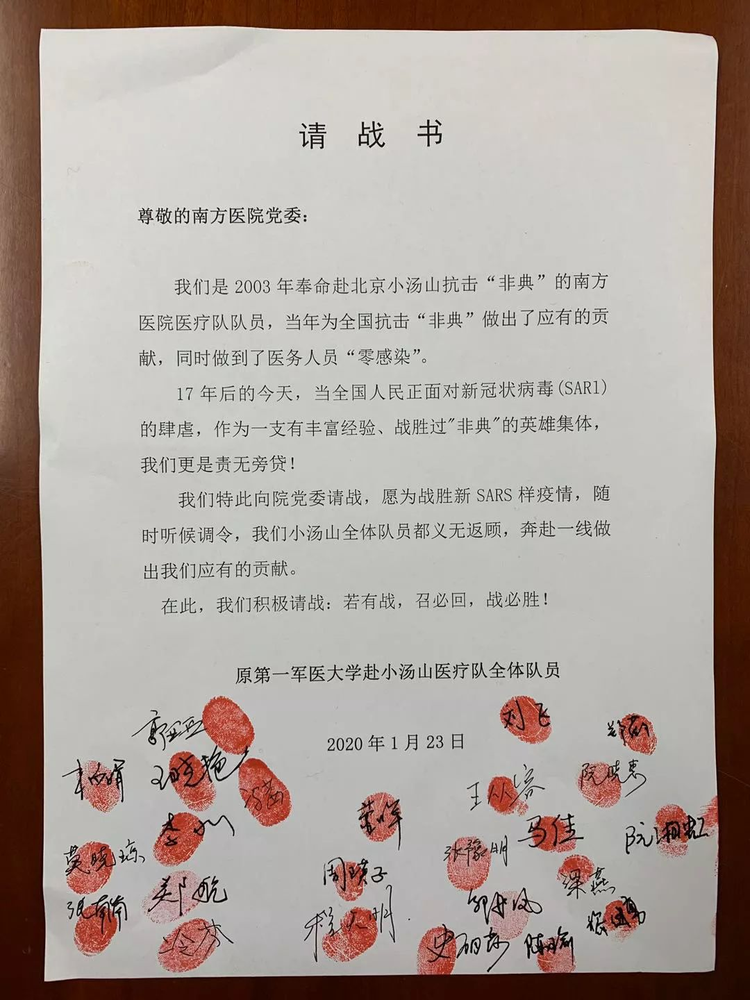
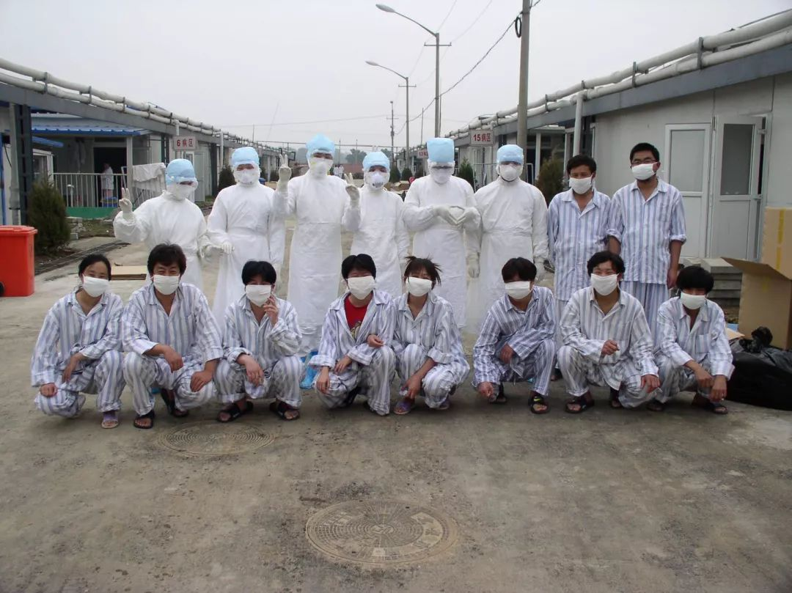

***
***武汉紧急建设“小汤山医院”，当年如何做到SARS治愈率99%、1383名医护零感染？
原文链接 备份链接 武汉正在该市蔡甸区职工疗养院，紧急设计建设一个有1000个床位的临时医院，用于集中收治新型冠状病毒肺炎患者。临时医院计划在2月3日前投入使用。 这是学“小汤山模式”。2003年，北京7天建成小汤山医院，接收680名 …
***** *****
*****
*****“我们小汤山队员有充分的防护经验，做到了医务人员零感染，可以介入，给大家提供帮助。经过小汤山锻炼的医生，更应该站出来，听调令。我们需要发声，表达我们的意愿。”*****

出征前的郭亚兵（左四）和同事们。新京报记者周小琪 摄
文 | 新京报记者 周小琪
编辑｜陈晓舒 校对 | 李立军
►本文约3308字，阅读全文约需6分钟
1月23日，一封来自广州南方医院的“请战书”在网络流传，发起的是原第一军医大学南方医院赴小汤山医疗队（下称“赴小汤山医疗队”）。他们在“请战书”的末尾写道，“若有战，召必回，战必胜！”并印上24个红手印和签名。
此举引发示范效应，南方医院请战氛围热烈，近千名医护人员放弃休假准备随时回到工作岗位。也引发广东多家医院医护人员效仿，放弃休假，坚守岗位。

原第一军医大学南方医院赴小汤山医疗队队员请战书。新京报记者周小琪 摄
1月24日，广东派遣135名医生护士组成的医疗队前往湖北，应对新型冠状病毒感染的肺炎疫情。这支医疗队由来自八家医院的42名医生和93名护士组成。医疗队将分为普通患者救治医疗队和危重症患者救治医疗队。
南方医院24人团队将在除夕夜23时搭乘飞机前往武汉支援。
晚上8点，他们在南方医院停车场集合，上百位同事、家属拿着鲜花前来送行。赴武汉医疗队队长郭亚兵和家人简单地吃了一顿年夜饭，便赶到了现场，他说，“我的任务就是把大家平平安安地带到武汉，再平平安安地带回来。”
出发前，队员们换上红色的志愿者服，在行李箱上贴上了“广东南方医院医疗队”的贴纸，排成一排，喊了三声“南方医院医疗队加油”的口号，便登上了前往机场的大巴。
这支医疗团队部分成员曾经在2003年支援北京小汤山医院，参与抗击“非典”，在当时，做到了医务人员“零感染”。
新京报记者对话此次南方医院赴武汉医疗队队长、南方医院感染内科肝脏肿瘤中心教授郭亚兵，他也是17年前赴小汤山医疗队队长，他向新京报记者回忆了当年在小汤山抗击“非典”的往事，为抗击新型冠状病毒提供了借鉴。

出发前，队员们在行李箱上贴上“广东南方医院医疗队”的贴纸。新京报记者周小琪 摄
出征武汉：“我们需要发声，表达我们的意愿”
*** ***
***
剥洋葱：你们为什么会写下这封请战书？
郭亚兵：很早之前，新型冠状病毒刚发现的时候，我们的队员王晓艳就提出来了写请愿书的建议。因为我们发现，这次疫情与非典非常类似，和当年在广州、北京的情况差不多，我们小汤山队员有充分的防护经验，做到了医务人员零感染，可以介入，给大家提供帮助。经过小汤山锻炼的医生，更应该站出来，听调令。我们需要发声，表达我们的意愿。
请战不是一定要上前线，还不一定轮得到我们，比如55岁以上的医生，年纪比较大，不一定能上。我们更多地是想给大家信心，提高大家战胜疾病的意志。
剥洋葱：请战书发出来以后，医院决定派你们去了吗？
郭亚兵：写了请战书之后，我们有很多同事退掉回家的车票、返程，都已经做好了准备。医院今天决定，我们今晚8点出发，一共去24个人。相关的呼吸、感染、心血管、急诊等科室都派了人，护理人员也会去，他们的工作很重要，占到一半以上的工作量。
小汤山经验：“划分了干净区、半污染区、污染区”******
剥洋葱：你们一共有多少人去了小汤山？去之前是什么心态？
郭亚兵：呼吸、感染、心血管等各个科室的医生、护士、技术人员加起来一共是29个人，年纪最小的只有17岁，最大的42岁，大多数都是比较年轻力壮的。
作为传染病专业的人，上前线是我们分内的事。医生护士跟老百姓一样，对疾病不熟悉的时候，也会觉得害怕。但是经过专业的训练之后，对疾病的理解比老百姓要快，能更快克服焦虑。
剥洋葱：你们在小汤山待了多久？主要做了哪些工作？
郭亚兵：2003年5月初进去，到6月23日结束，接近两个月。出发的时候，我也不知道要呆多久，还在考虑要不要带冬装，实际上待的比想象的时间短。我们当时是在17病区，有30多张床位收治病人，所有的治疗都是由我们团队来负责。

小汤山时期，医护人员和患者的合影。受访者供图
剥洋葱：在小汤山期间，医疗队实现了“零感染”，是怎么做到的？
郭亚兵：去小汤山之前，每个带队的队长都是要签军令状，保证队员一个都不感染。小汤山的防护非常严格，有很强的组织能力、纪律性，说一不二。因为这是一个团队、系统的问题，任何一个人掉链子都不行。
在小汤山时，我们有很细致的防护指南，划分了干净区（指行政和后勤办公的区域）、半污染区（指医护人员的居住区）、污染区（指病区）三个不同的区域，大家分开活动。
像我们做传染病出生的，本身职业敏感性就很高，平时看发烧一定会戴口罩，也养成了洗手的习惯。跟人讲话的时候，习惯站在上风口，不会站在下风口。有时在电梯里人多，比较拥挤，我就憋气，到了空房间再喘气。其实传染对所有人都是一样的，只是看你有没有做到位。
即使在装备缺少的时候，也要保证因陋就简，做到关键位置的防护，不能不洗手揉眼睛。比如在给病人插管的时候，口罩突然烂了，可以先憋着气给病人操作，弄完再去上风口喘口气儿。这样也能达到呼吸道隔离的效果。
剥洋葱：除了防护以外，还有哪些在小汤山的经验可以分享？
郭亚兵：总结一句话，就是“心理要放松，但防护要到位”。微生物感染跟个人的免疫力密切相关，如果休息不好、焦虑，免疫状态紊乱，自然就更容易感染，所以我们不提倡疲劳战术。医护人员要保持信心、乐观的状态，才能提高免疫力。当年在小汤山时，大家心情很放松，该吃饭就吃饭，该运动还是要去运动。
医疗核心是医护人员，必须有战斗力。关键是斗志，很多人斗志一垮，就没有战斗力了。面对未知的疫情，刚入职的年轻医生产生恐慌，不知道如何防护，我们必须告诉他们怎么防，要教会他们招数，让医护人员增强信心，不能让他们还没上阵就泄气，信心是最重要的。
剥洋葱：小汤山医疗队的队员们现状如何？
郭亚兵：当年的队员都成为了医院各个科室的骨干，比如王晓艳，现在是脑外科的护士长。最小的那位队员，今年34岁，已经当妈妈了。我们现在有个群，每年还会聚两次，大家都是生死之交，感情还是不太一样。

队员们在横幅上签字。新京报记者周小琪 摄
疫情防控：“病人来了必须看，看了要处理”
**************
剥洋葱：你刚刚提到，这次疫情跟非典很相似，主要有哪些相同点？
郭亚兵：和非典一样，武汉肺炎刚出现的时候，大家不知道它是什么病，传染途径、传染源、感染的厉害性、流行多久，这些都是未知。像非典是暴发两个月之后才知道，它是SARS病毒，武汉肺炎暴发不到一个月，很快鉴定出来是和SARS类似的冠状病毒。
相似的地方具体来说有四点，一是病毒来源不明，非典直到2017年才确认，来源是蝙蝠，这次疫情虽然也明确来源是野生动物，但具体是什么不知道；二是它的传染性，可以人传人，同时也都出现了医护人员感染的情况；三是我们都不知道，疫情会持续多久；四是病毒的发源地都是一个地点，非典是广东，这次是武汉，其他省份暴发的感染都跟武汉来的人相关。
剥洋葱：和非典相比，这次疫情在防控上有哪些难点？
郭亚兵：从传染病控制的角度来说，第一是要控制传染源，非典的病征很明确，发烧、咳嗽等症状，很容易鉴别。但这次疫情的有的人发低烧，甚至不发烧，出现了一些轻症，只认为自己是感冒，鉴别难度大，所以不好控制传染源；第二是要切断传播途径，这次的病毒通过空气、飞沫传播或是皮肤黏膜传播，要戴口罩、勤洗手；第三是研发疫苗和预防性药物。目前我们还找不到对抗病毒的有效药物，也没有疫苗。现在人对新型病毒还没有免疫力，第一波接触的人可能会有抗体。
所以目前只能从前两个方面来防控，我们医院现在单独设立了发热门诊，早诊早治，隔离接触人员，不能到处跑。总体来说，这次疫情的控制难度要比SARS大，我们做好打持久战的准备。
剥洋葱：南方医院也是此次疫情的定点医院，现在情况怎么样？
郭亚兵：我们医院现在单独设立了发热门诊，感染病区已经腾出了70张床位，早诊早治，隔离接触人员，不能到处跑。同时我们从全院抽调了人手，很多志愿者报名，最后选了50多人，都是年轻力壮的，我给他们做了相关的培训，诊疗的每个环节也都带着走了一遍。
昨天凌晨，我到发热门诊去看，还有三四十个病人在，负担很重，这些病人来了必须看，看了要处理。

广州南方医院外景。新京报记者周小琪 摄
剥洋葱：你们如何判断患者是否感染了新型冠状病毒的？
郭亚兵：依据卫健委的指南和方案，一个是临床诊断，发热门诊有发烧的，就看有没有咳嗽、呼吸道症状等；抽血，看白细胞是不是低；拍胸片，判断有没有肺炎，再问流行病学史，有没有去过武汉，如果这些条件都符合这次的标准，就可以判定为疑似了，需要隔离。二是病原学诊断，通过试剂盒对疑似病患采样，到疾控中心进行两轮核酸检测，两轮如果都呈阳性，就可以确诊病患感染了新型冠状病毒。
有的患者没有发烧咳嗽。这种叫做前驱症状，可能患者就觉得没有力气，或者胃不舒服，不会想到是病毒感染的事情。在前驱症状以后，马上就会开始出现典型症状，比如发烧、咳嗽，造成肺炎。病毒的个体差异很大，同一个病毒感染100个人，会有不同的症状，所以这也给确诊带来了难度。
*洋葱话题*
*▼*
*你想对一线医护人员说什么？*
*后台回复关键词*****“洋葱君” ，加入读者群****
***推荐阅读***

68岁新型肺炎患者：最后一次见老伴是她被推往ICU

直击肺炎疫情下的武汉、北京、香港

*********既然在看，就点一下吧****** *********
*********
原文链接 备份链接 武汉正在该市蔡甸区职工疗养院，紧急设计建设一个有1000个床位的临时医院，用于集中收治新型冠状病毒肺炎患者。临时医院计划在2月3日前投入使用。 这是学“小汤山模式”。2003年，北京7天建成小汤山医院，接收680名 …
原文链接 备份链接 编者按： 据央视新闻，武汉市政府将参照北京小汤山的模式建立急救医院，建筑面积达到2.5万平方米，可容纳1000张病床，医院将在6天内建成。 2003年，小汤山医疗点在对抗非典的战役中成效显著：一周建成，成为当时世界最大 …
原文链接 备份链接 昨天除夕夜，我们收到了一份沉甸甸的读者来信。信件是由一名父亲写给他远在重庆老家的孩子。这个春节，他们夫妻二人作为浙江前线医护人员，为了对患者负责，放弃了与家人团聚的时间。他们没时间感叹，也来不及思恋，昼夜奋战在疫情一 …
原文链接 备份链接 3月3日。 依然天阴，有点冷嗖嗖的。我在郊区的邻居一早发给我照片。留言说，你家的海棠开花了，你的微信文被封了。微信内容被封，我已习惯。但海棠开花却实在让人高兴。去年夏秋，一直大旱。树叶全枯并且掉光，我很担心这棵树会死 …
原文链接 备份链接 记者 | 刘畅 王梓辉 年轻人与老年人的两重世界 “我所在的镇距离武汉开车只要两个小时，武汉夜里凌晨两点多宣布封城，我们镇上有人夜里就开车回来了。”家住在武汉西边荆州监利县网市镇的蔡姗发现，在武汉肺炎疫情开始上涨的1 …